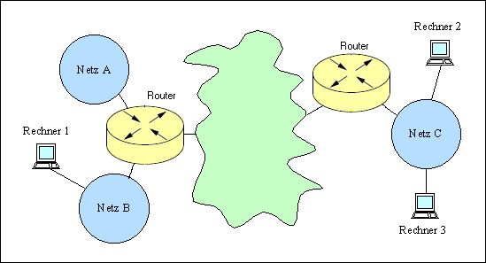
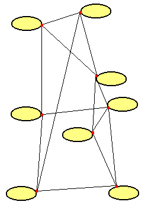
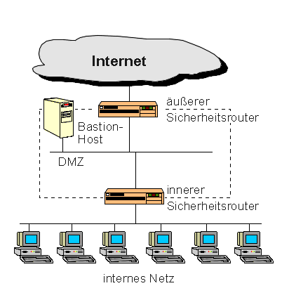

|
Grundlagen Computernetze
Prof. Jürgen Plate |
Repeater, Bridge, Router
 Um die Längenbeschränkung eines Ethernet-Segmentes aufzuheben,
verwendet man Repeater. Ein klassischer Repeater verbindet zwei Ethernet-Segmente
(10Base5 oder 10Base2), er ist mit je einem Transceiver
an jedes Segment angeschlossen. Ein Remote-Repeater ist ein Repeater-Paar,
das durch einen max. 1000 m langen Lichtwellenleiter verbunden ist. In jedem
Netz dürfen höchstens vier Repeater vorhanden sein, man erreicht
so eine Gesamtlänge von 2500 m. Ein Remote Repeater-Paar zählt
dabei wie ein lokaler Repeater. An den Lichtwellenleiter können keine
Ethernet-Stationen angeschlossen werden. Der Repeater ist als reines
Verstärkerelement in der untersten Schicht des OSI-Modells angesiedelt.
Um die Längenbeschränkung eines Ethernet-Segmentes aufzuheben,
verwendet man Repeater. Ein klassischer Repeater verbindet zwei Ethernet-Segmente
(10Base5 oder 10Base2), er ist mit je einem Transceiver
an jedes Segment angeschlossen. Ein Remote-Repeater ist ein Repeater-Paar,
das durch einen max. 1000 m langen Lichtwellenleiter verbunden ist. In jedem
Netz dürfen höchstens vier Repeater vorhanden sein, man erreicht
so eine Gesamtlänge von 2500 m. Ein Remote Repeater-Paar zählt
dabei wie ein lokaler Repeater. An den Lichtwellenleiter können keine
Ethernet-Stationen angeschlossen werden. Der Repeater ist als reines
Verstärkerelement in der untersten Schicht des OSI-Modells angesiedelt.
Der Multiport-Repeater bietet die Möglichkeit, mehrere (typischerweise
bis zu acht) Cheapernet-Segmente zusammenzuführen und über einen
Transceiveranschluß mit dem Standard-Ethernet zu verbinden. Bei zwei
oder mehr anzuschließenden Cheapernet-Segmenten ist die Lösung
kostengünstiger als der Einsatz von Standard-Repeatern.
Analog dem Multiport-Repeater besteht die Funktion eines Hub darin, mehrere
Twisted-Pair-Kabelsegmente über einen Transceiveranschluß mit
dem Ethernet zu verbinden. Das englische Wort "Hub" bezeichnet die Nabe
eines Speichenrades - wie die Speichen des Rades verteilen sich die
Leitungen sternförmig vom Hub aus. Der Begriff "Hub" steht also für
fast alle Verstärkerkomponenten, die eine sternförmige Vernetzung
ermöglichen. Hubs haben immer mehrere Ports zum Anschluß von
mehreren Rechnern. Bei Twisted-Pair-Verkabelung ist meist einer der
Ports als "Uplink" schaltbar, d. h. es werden wie im 4. Kapitel beschrieben
die Leitungen gekreuzt. Auf diese Weise lassen sich die Hubs kaskadieren.
Typisch sind Hubs mit 4, 8, 12, 16, 24 und 32 Ports.
Manche Repeater/Hubs lassen sich über spezielle Busports
und in der Regel sehr kurze Buskabel verbinden. Vorteil dieser
herstellerspezifischen Kaskadierung ist, daß alle so verbundenen
Repeater/Hubs als ein Repeater bezüglich der Repeaterregel zählen.
Die Anzahl der hintereinanderschaltbaren Repeater bei 10Base5 und 10Base2
ist jedoch limitiert (Addition von Laufzeiten, Phasenverschiebungen, usw.).
Ein Remote-Repeater-Paar (10Base5, 10Base2) mit einer Punkt-zu-Punkt-Verbindung
zwischen beiden Hälften wird als ein Repeater betrachtet. Weiterhin gilt:
Es dürfen nicht mehr als fünf (5) Kabelsegmente verbunden werden. Zur
Verbindung werden vier (4) Repeater benötigt und nur drei (3) der Segmente
dürfen Rechner angeschlossen haben. Bei Ethernet (10Base5) können so
5 Segmente zu je 500 m verbunden werden, das gesamte Netz darf damit
eine Ausdehnung von 2,5 km haben.
Man kann diese Regel auch auf Twisted-Pair-Hubs anwenden - auch hier kann man nicht
beliebig viele Hubs kaskadieren. Hier ist die Leitungslänge sogar auf ca.
100 m je Segment begrenzt. Eine Erweiterung ist durch aktive Elemente möglich
(Switch, Router).
Zur Verbindung von Gebäuden werden oft Lichtwellenleiter (LWL) verwendet.
Außerdem können mit ihnen in Gebäuden längere Entfernungen
als mit Koaxkabeln überbrückt werden.
Lichtleiter können wie TwistedPair auch im Ethernet-Verkehr nur für
Punkt-zu-Punkt-Verbindungen eingesetzt werden. Lichtleiter werden
zwischen Bridges, Switches und/oder Repeatern, einem Repeater und
einer einzelnen Station mit Transceiver oder zwischen zwei Stationen
mit Transceivern verwendet.
Als Industriestandard für Lichtleiterprodukte hatte sich ursprünglich
FOIRL (Fiber Optic InterrepeaterLink)
durchgesetzt. Inzwischen wurde FOIRL vom offiziellen IEEE 802.3 10BASE-FL-Standard
abgelöst, daher sollte man heute nur noch
10BASE-FL konforme Geräte einsetzen. An einem FOIRL-Segment kann ein
FOIRL-kompatibles Gerät mit einem 10BASE-FL-Transceiver gemischt
werden. In diesem Fall gelten jedoch die strengeren
FOIRL-Regeln. Normalerweise ist das eingesetzte LWL-Kabel ein
Multimode- (MMF-) Kabel mit ST- oder SC-Steckern. Die maximale Länge des
Kabels ist 2000 m beim Einsatz von 10BASE-FL-Komponenten, 1000 m bei
FOIRL.
Sternkoppler können als Verstärker betrachtet werden, jedes Datenpaket,
das von einem angeschlossenen Segment stammt, wird in alle anderen Segmente
verbreitet, einschließlich Kollisionen und fehlerhafter Pakete.
An einen Sternkoppler können Koax- oder Cheapernet-Segmente angeschlossen
werden. Zudem gibt es direkte Transceiver-Anschlüsse und mittlerweile
auch Anschlüsse für Twisted-Pair-Kabelsegmente.
Eine Bridge trennt zwei Ethernet-LANs physikalisch, Störungen wie z.
B. Kollisionen und fehlerhafte Pakete gelangen nicht über die Bridge
hinaus. Die Bridge ist protokolltransparent, d. h. sie überträgt
alle auf dem Ethernet laufenden Protokolle. Die beiden beteiligten Netze
erscheinen also für eine Station wie ein einziges Netz. Durch den Einsatz
einer Bridge können die Längenbeschränkungen des Ethernets
überwunden werden, den sie verstärkt die Signale nicht nur, sondern
generiert senderseitig einen neuen Bitstrom. Die Bridge arbeitet mit derselben
Übertragungsrate, wie die beteiligten Netze. Die Anzahl der
hintereinandergeschalteten Bridges ist auf sieben begrenzt (IEEE 802.1).
Normalerweise wird man aber nicht mehr
als vier Bridges hintereinanderschalten.
Jede lokale Bridge ist über Transceiver an zwei Ethernet-LANs angeschlossen.
Die Bridge empfängt von beiden Netzsegmenten, mit denen sie wie jede normale
Station verbunden ist, alle Blöcke und analysiert die Absender- und
Empfängeradressen. Steht die Absenderadresse nicht in der
brückeninternen Adreßtabelle, so wird sie vermerkt. Die
Bridge lernt und speichert so die Information, auf welcher Seite der Bridge
der Rechner mit dieser Adresse angeschlossen ist. Ist die Empfängeradresse
bekannt und der Empfänger auf derselben Seite wie der
Absender, so vewirft die Bridge das Paket (filtert es). Ist
der Empfänger auf der anderen Seite oder nicht in der
Tabelle, wird das Paket weitergeschickt.
Die intelligente Bridge lernt so selbständig, welche Pakete
weitergeschickt werden müssen und welche nicht. Bei managebaren
Bridges können zusätzliche Adreß-Filter gesetzt werden, die regeln an
welche Adressen die Bridge Informationen immer weiterschicken muß
oder nie weiterschicken darf. Eine Bridge arbeitet auf der Ebene 2
des OSI-Schichtenmodells.
Bridges können Ethernet-Segmente auch über
synchrone Standleitungen, Satellitenverbindungen, Funkverbindungen, öffentliche
Paketvermittlungsnetze und schnelle Lichtleiternetze (z.B. FDDI) verbinden. In der
Regel müssen solche Bridges immer paarweise eingesetzt werden.
Bridges sind komplette, relativ leistungsfähige Rechner mit Speicher und
mindestens zwei Netzwerkanschlüssen. Sie sind unabhängig von
höheren Protokollen (funktionieren also z.B. mit TCP/IP, DECnet,
IPX, LAT, MOP etc. gleichzeitig) und erfordern bei
normalem Einsatz keine zusätzliche Software oder Programmierung.
Nach Außen bildet ein mittels Bridge erweitertes LAN weiterhin eine Einheit,
welches eine eindeutige Adressierung bedingt. Eine Bridge interpretiert die MAC-Adressen
der Datenpakete. Weitere Features einer Bridge sind:
- Ausfallsicherheit
Störungen gelangen von der einen Seite einer Bridge nicht auf die andere
Seite. Sie werden auch in diesem Sinne zum Trennen von sog. Kollisions-Domänen
(collision domain) eingesetzt.
- Datensicherheit
Informationen, die zwischen Knoten auf einer Seite der Bridge ausgetauscht werden,
können nicht auf der anderen Seite der Bridge abgehört werden.
- Durchsatzsteigerung
In den durch Bridges getrennten Netzsegmenten können jeweils unterschiedliche
Daten-Blöcke gleichzeitig transferiert werden. Hierdurch wird die
Netzperformance erhöht. Allerdings erzeugen Brücken dadurch, daß sie die Blöcke
zwischenspeichern eine zusätzliche Verzögerung und können deswegen
bei kaum ausgelasteten Netzen die Performance sogar verschlechtern.
- Vermeidung von Netzwerkschleifen
Eine Bridge unterstützt den sog. "Spanning-Tree-Algorithmus", wodurch es
möglich ist, auch Schleifen- oder Ring-Konfigurationen (= redundante Verbindungen)
im Netz zu erlauben. Die Bridges im Netz kommunizieren miteinander, im
Gegensatz zu "dummen" Repeatern oder Hubs, und stellen über den
Algorithmus sicher, daß bei mehreren redundanten Verbindungen immer
nur eine gerade aktiv ist.
Weitere Kenndaten einer Bridge sind die Größe der Adreßtabelle, die Filterrate,
und die Transferrate. Die Größe der Adreßtabelle gibt an, wieviele Adressen
(Knoten) insgesamt in der Bridge gespeichert werden können.
Die Filterrate gibt an, wieviele Pakete pro Sekunde (packets
per second, pps) eine Bridge maximal empfangen kann. Bei voller Last
und minimaler Paketlänge können in einem Ethernet-Segment theoretisch
bis zu 14.880 Pakete pro Sekunde auftreten. Auf beiden Ports hat eine
2-Port-Bridge also insgesamt maximal 29.760 Pakete pro Sekunde zu
filtern. Alle modernen Bridges erreichen diese theoretisch möglichen
Maximalwerte. Die Transferrate gibt an, wieviel Pakete pro Sekunde die Bridge
auf die andere Seite weiterleiten kann. Der Maximalwert ist hier
14.880 pps, da bei dieser Transferrate beide Segmente voll ausgelastet
sind.
Der Switch ist wie die Bridge ein Gerät des OSI-Layers 2,
d. h. er kann LANs mit verschiedenen physikalischen Eigenschaften verbinden, z. B.
Koax- und Twisted-Pair-Netzwerke. Allerdings müssen, ebenso wie bei der Bridge,
alle Protokolle höherer Ebenen 3 bis 7 identisch sein! Ein Switch ist
somit protokolltransparent. Er wird oft auch als Multi-Port-Bridge bezeichnet, da
dieser ähnliche Eigenschaften wie eine Bridge aufweist.
Jeder Port eines Switch bildet ein eigenes Netzsegment. Jedem dieser Segmente
steht die gesamte Netzwerk-Bandbreite zu Verfügung. Dadurch
erhöht ein Switch nicht nur - wie die Bridge - die Netzwerk-Performance im Gesamtnetz,
sondern auch in jedem einzelnen Segment. Der Switch untersucht jedes durchlaufende Paket auf
die MAC-Adresse des Zielsegmentes und kann es direkt dorthin weiterleiten.
Der große Vorteil eines Switches liegt nun in der Fähigkeit seine
Ports direkt miteinander verschalten zu können, d. h. dedizierte Verbindungen
aufzubauen.

Was ist nun der Unterschied zwischen einem Switch und einer
Multiport-Bridge? Bei den Produkten der meisten Hersteller gibt es
keinen. "Switch" klingt nach Tempo und Leistung, deswegen haben viele
Hersteller ihre Multiport-Bridges Switches genannt. Der Begriff
Switch für Multiport-Bridges wurde von der Firma Kalpana (inzwischen
von Cisco aufgekauft) kreiert, da deren Produkte nicht der
IEEE-Spezifikation einer Bridge entsprachen, konnte Kalpana die
Produkte nicht Bridges nennen und hat den Namen Switch gewählt.
Kalpana war nun sehr erfolgreich mit dem Marketing ihrer Switches.
Deswegen haben andere Hersteller ihre Bridges auch Switch,
Switch mit Bridge-Eigenschaften oder "Bridging Switch" genannt.
Switches brechen die Ethernet-Busstruktur in eine Bus-/Sternstruktur
auf. Teilsegmente mit Busstruktur werden sternförmig über je einen
Port des Switch gekoppelt. Zwischen den einzelnen Ports können Pakete
mit maximaler Ethernet-Geschwindigkeit übertragen werden. Wesentlich
ist die Fähigkeit von Switches, mehrere Übertragungen zwischen
unterschiedlichen Segmenten gleichzeitig durchzuführen. Dadurch erhöht
sich die Bandbreite des gesamten Netzes entsprechend.
Die volle Leistungsfähigkeit von Switches kann nur dann genutzt
werden, wenn eine geeignete Netzwerktopologie vorhanden ist
bzw. geschaffen werden kann. Die Datenlast sollte nach Möglichkeit
gleichmäßig über die Ports verteilt werden. Systeme, die viele Daten
übertragen, müssen unter Umständen an einen eigenen Switch-Port
angeschlossen werden. Dies bezeichnet man dann als
Private Ethernet. Außerdem sollte man versuchen, Systeme die viel
miteinander kommunizieren, an einen gemeinsamen Port des Switches
anzuschließen, um so die Datenmengen, die mehr als ein Segment
durchlaufen müssen, zu reduzieren.
Es haben sich drei grundlegende Realisierungsformen für Switches etabliert:
- Shared Memory: Alle Schnittstellen kommunizieren über einen zentralen
Speicher. Bei dieser meist recht preisgünstigen Realisierung steht oft nur ein
einfacher interner Rechnerbus zur Verfügung.
- Common Bus: Die Schnittstellen verfügen über einen lokalen Speicher
und werden über einen gemeinsamen Bus mit den anderen Schnittstellen verbunden. Der
interne Bus ist in der Regel schneller getaktet als die externen Schnittstellen (Zeitmultiplex)
oder erlaubt als so genannte Backplane mehrere parallele Verbindungen (Raummultiplex).
- Crosspoint Matrix: Die Schnittstellen verfügen über einen lokalen
Speicher und werden über eine flexible und leistungsfähige Schaltmatrix mit den
anderen Schnittstellen verbunden. Diese Realisierungsform erlaubt in der Regel die
höchste Leistungsfähigkeit, bedingt aber den größten
Hardwareaufwand.
Allgemein haben sich in der Switch-Technologie zwei Methoden der Weiterleitung
herauskristallisiert:
- Cut-Through bzw. On The Fly
Der Ethernet Switch wartet im
Gegensatz zu normalen Bridges nicht, bis er das vollständige Paket
gelesen hat, sondern er überträgt das ankommende Paket nach Empfang
der 6-Byte-Destination-Adresse. Da nicht das gesamte Paket bearbeitet
werden muß, tritt eine Zeitverzögerung von nur etwa 40 Mikrosekunden
ein. Sollte das Zielsegment bei der Übertragung gerade belegt sein,
speichert der Ethernet Switch das Paket entsprechend zwischen.
Bei den Switches werden, im Gegensatz zu Bridges, mit Ausnahme von
short frames (Pakete, die kleiner als die minimal zulässigen 64 Bytes
sind), fehlerhafte Pakete auch auf das andere Segment
übertragen. Grund hierfür ist, daß die CRC-Prüfung (Cyclic Redundancy
Check) erst bei einem vollständig gelesenen Paket durchgeführt werden kann.
Solange der Prozentsatz von fehlerhaften Paketen im Netz gering ist,
entstehen keine Probleme. Sobald aber (z.B. aufgrund eines
Konfigurationsfehlers, fehlerhafter Hardware oder extrem hoher
Netzlast bei gleichzeitig langen Segmenten mit mehreren Repeatern) der
Prozentsatz der Kollisionen steigt, können Switches auch dazu führen,
daß die Leistung des Gesamtnetzes deutlich sinkt.
Cut-Through-Switching bietet dann einen Vorteil, wenn man sehr geringe Verzögerungen
bei der Übertragung zwischen einzelnen Knoten benötigt. Diese Technologie sollte
also eingesetzt werden, wenn es darum geht, in relativ kleinen Netzen eine
große Anzahl Daten zwischen wenigen Knoten zu übertragen.
- Store-and-Forward
Die Switches dieser Kategorie untersuchen im Gegensatz zu den vorher erwähnten
das gesamte Datenpaket. Dazu werden die Pakete kurz zwischengespeichert,
auf ihre Korrektheit und Gültigkeit überprüft und anschließend
verworfen oder weitergeleitet. Einerseits hat dies den Nachteil der
größeren Verzögerung beim Weiterschicken des Paketes, andererseits
werden keinerlei fehlerhafte Pakete auf das andere Segment übertragen.
Diese Lösung ist bei größeren Netzen mit vielen Knoten
und Kommunikationsbeziehungen besser, weil nicht einzelne fehlerhafte
Segmente durch Kollisionen das ganze Netz belasten können. Bei diesen
Anwendungen ist die Gesamttransferrate entscheidend, die Verzögerung wirkt
sich hier kaum aus.
Inzwischen sind Switching-Produkte (z.B. von 3Com, Cisco oder Allied
Telesyn) am Markt, die beide Technologien unterstützen. Dies geschieht
entweder per Konfiguration (Software) oder automatisch anhand der
CRC-Fehler-Häufigkeit. Wird eine vorgegebene Anzahl von fehlerhaften Paketen
überschritten, schaltet der Switch automatisch von "Cut Through" auf
"Store and Forward" um.
Die Performance eines Netzes kann man auf Basis vorhandener
Standalone-Switches erhöhen, indem zusätzliche
Switches über die Ethernetports kaskadiert werden.
Alle Switches erlauben die Kaskadierung über einen einzelnen
Ethernet-Port mit einer maximalen Transferrate von 10 Mbit/s (bzw. 100 Mbit/s
bei Fast Ethernet Switches). Kann man das Netz in Teilnetze unterteilen, zwischen
denen diese Transferrate ausreicht, ist dies eine sinnvolle Lösung.
Doch meistens ist das nicht der Fall.
Die nächste und wohl beste Möglichkeit der Kopplung von Switches ist der
Einsatz von Produkten, die den Anschluß an einen High Speed Backbone
erlauben. Im Gegensatz zu kaskadierten Standalone-Switches können weitere
Geräte an den Backbone gehängt werden, ohne daß Ports
für die Switch-zu-Switch-Verbindung verlorengehen. Eine Backbone-Lösung
ist nicht nur schneller und flexibler sondern für große Netze auch
kostengünstiger. Man muß unterscheiden zwischen Lösungen, die eine
herstellereigene Verbindung benutzen (proprietär) und solchen, die auf
einen Standard wie Fast Ethernet, Gigabit Ethernet, FDDI oder ATM setzen.
Unterschiede Hub - Switch:
Hub
- Es kann immer nur ein Datenpaket nach dem anderen den Hub passieren
- Geschwindigkeit 10 oder 10/100 Mbps bei Dual Speed Hubs
- Hubs wissen nicht, an welchem Port welche Station angeschlossen ist,
sie können es auch nicht lernen. Hubs müssen nicht konfiguriert werden.
Switch
- Mehrere Datenpakete können den Switch gleichzeitig passieren
- Die Gesamtbandbreite (der Datendurchsatz) ist wesentlich höher als bei einem Hub
- Switches lernen nach und nach, welche Stationen mit welchen Ports verbunden
sind, somit werden bei weiteren Datenübertragungen keine anderen Ports
unnötig belastet, sondern nur der Port, an dem die Zielstation angeschlossen ist
- Geschwindigkeiten sind heute 10, 10/100 oder 1000 MBit/s (Gigabit Ethernet)
- Switches müssen nicht konfiguriert werden
- inzwischen preisgünstiger als Hubs
Eine oft gestellte Glaubensfrage:
"In der Literatur und im Web finde ich immer wieder die Bemerkung, dass ein Hub
nur Half-Duplex-Übertragung ermögliche, ein Switch dagegen aber Full-Duplex.
Das kann ich nicht glauben. Vorausgesetzt, der Hub ist ein Signalverstärker, an
den die Geräte mit zwei Aderpaaren (RX und TX) angeschlossen sind."
Für die Antwort betrachten wir das Ganze aus angemessener Distanz:
Ein Hub ist nach wie vor ein Verstärker, der alles, was an einem Port reinkommt
auf allen(!) Ports wieder ausgibt - egal wie's kommt. Dann gibt der Hub die empfangenen
Impulse aber auch an dem Port aus, an dem sie gerade reinkommen. Wenn jetzt
eine Kommunikation zwischen zwei Knoten an beispielsweise den
Ports 1 und 2 stattfindet und Knoten 1 sendet, dann bekommt er sein
logischerweise auch eigenes Geschwätz zu hören. Wenn dann noch der
Knoten 2 sendet, gibt's eine Kollision. Also muss Knoten 2 still sein, wenn Knoten 1
sendet und umgekeht - das ist aber dann doch nur halbduplex.
Der Switch schaltet einen "Kanal" zwischen zwei Ports, die anderen
bleiben aussen vor und daher kann er tatsächlich vollduplex fahren
(bis die Last soweit steigt, das er in den Hub-Modus schaltet und
alles wieder egal ist).
Latenzzeiten von Ethernet Switches
Aufgrund der Arbeitsweise unterscheiden sich das Cut-Through-Verfahren
und Store-and-Foreward-Verfahren in ihren Latenzzeiten.
Der Cut-Through-Switch benutzt die Zieladresse als ein Entscheidungskriterium,
um einen Zielport aus einer Adresstabelle zu erhalten. Nach der Bestimmung
des Zielports wird eine Querverbindung durch den Switch geschaltet, und
der Frame wird zum Zielport geleitet
Da diese Switching-Methode nur die Speicherung eines kleinen Teils des Frames
erfordert, bis der Switch fähig ist, die Zieladresse zu erkennen und den
Switching-Vorgang einzuleiten, ist die Latenzzeit in diesem Fall nur minimal.
Die Latenzzeit für einen 10-Mbps-Ethernet-Frame berechnet sich wie folgt:
Der Switch muss zunächst 14 Bytes einlesen (8 Bytes für die Präambel und
6 Bytes für die Zieladresse). Für die Latenzzeit TL eines Cut-Through
Ethernet-Switches ergibt sich
Mit einem Interframe-Gap von TIG = 9,6 µs und einer
Bitdauer von TBK = 0,1 µs:
TL = 9,6 + 14*8*0,1 = 9,6 + 11,2 = 20,8 µs
Ein Store-and-Forward-Switch speichert erst den gesamten Frame, bevor die
Verarbeitung der Datenfelder des Frames beginnt. Wenn der gesamte Frame im
Zwischenspeicher angekommen ist, wird ein CRC-Check durchgeführt, optional auch
weitere Filteraktionen. Ist der Frame fehlerfrei, wird er von Zwischenspeicher
zum Zielport geleitet, anderenfalls verworfen. Für die Latenzzeit TL eines
Ethernet Store-and-Foreward Switches gilt also theoretisch mit der Framegröße FG:
Da die minimale Größe eines 10-Mbps-Ethernet-Frames 72 Bytes beträgt, gilt für
die minimale Latenzzeit TLmin eines Store-and-Foreward
Ethernet-Switches:
Mit einem Interframe-Gap von TIG = 9,6 µs und einer
Bitdauer von TBK = 0,1 µs ergibt sich:
TL = 9,6 + 72*8*0,1 = 67,2 µs
Aufgrund der Speicherung des gesamten Frames ist die Latenzzeit beim
Store-and-Foreward Switching abhängig von der Framegröße, so daß
für Frames maximaler Größe (1526 Bytes) gilt:
TL = 9,6 + 1526*8*0,1 = 1,23 ms
Mehrere Verbindungen zwischen zwei Switches
Normalerweise werden zwei Switches mit einem Patchkabel verbunden. Manchmal haben Switches
hierfür einen eigenen Hochgeschwindigkeits-Port oder einen Glasfaseranschluß, damit die
Backbone-Verbindung keinen Flaschenhals bildet. Eine andere Möglichkeit stellt das
Opfern einiger Anschlüsse dar, um die Switches durch mehrere Kabel miteinander
zu koppeln. Damit das klappt müssen die beiden Geräte eine "Link Aggregation" nach IEEE 802.3ad
beherrschen (auch "Port Trunking" oder "Channel Bundling" genannt). Damit aus zwei oder mehr
Verbindungsleitungen eine einzige logische Verbindung wird, gibt es auf Layer 2 als
Erweiterung den "Link Aggregation Control Layer" (LACL). Die Switches transportieren
die Daten mittels des "Link Aggregation Control Protocols" (LACP). Die Kabel-Redundanz
bietet sogar noch einen weiteren Vorteil: fällt ein Kabel aus, reduziert sich zwar
die Geschwindigkeit, die Strecke selbst bleibt aber erhalten. Die Gesamtgeschwindigkeit
ergibt sich als Summe der Geschwindigkeiten der einzelnen Ports, die alle gleich schnell
sein und sich im Vollduplexmodus befinden müssen. "Link Aggregation" kann man auch
einsetzen, wenn aus einem besonderen Anlaß temporär eine höhere Übertragungsbandbreite
benötigt wird.
Große Netzwerke wie das Internet bestehen aus vielen kleineren
Teilnetzwerken. Die Verbindung der verschiedenen Netze
wird durch spezielle Rechner hergestellt. Das sind, neben Bridges, Switches
und Gateways, im Internet vor allem Router. Diese haben die Aufgabe, Daten
zwischen Rechnern in verschiedenen Netzen auf möglichst günstigen
Wegen weiterzuleiten. Zum Beispiel wenn Rechner 1 im Netz B Daten an Rechner
2 im Netz C schicken möchte.

Router verbinden, im Gegensatz zu Bridges, in OSI-Schicht 3 auch
Netze unterschiedlicher Topologien. Sie sind Dreh- und Angelpunkt in
strukturiert aufgebauten LAN- und WAN-Netzen. Mit der Fähigkeit,
unterschiedliche Netztypen sowie unterschiedliche Protokolle zu
routen, ist eine optimale Verkehrslenkung und Netzauslastung
möglich. Routing wird erst dann erforderlich, wenn Kommunikation
zwischen Stationen in unterschiedlichen Subnetzen erfolgen soll.
Sie sind nicht protokolltransparent, sondern müssen in der Lage
sein, alle verwendeten Protokolle zu erkennen, da sie
Informationsblöcke protokollspezifisch umsetzen.
Klassische Beispiele in Heim- und KMU-Netzen sind die ISDN- oder DSL-Router,
welche die Verbindung zum Provider herstellen.
Router operieren in der Ebene 3 des OSI-Referenzmodells. Sie verbinden
Netzwerke über die entsprechenden Netzwerkprotokolle. Sie ermöglichen
die Zerlegung großer Netzwerke in kleinere Verwaltungseinheiten.
Sie leiten Datenpakete der Netzwerkschicht weiter (forwarding) und treffen
Entscheidungen über Wegewahl und Erreichbarkeit zu anderen Netzwerken
(routing). Der Router muß dafür die Adressierungsstruktur
in der Netzwerkschicht kennen.
Bevor ein Router ein Paket mit einer bestimmten IP-Adresse weiterleiten
kann, muß er für diese Adresse zunächst den Weg durch das
Netz zum Zielrechner bestimmen. Das geschieht mit Hilfe spezieller Protokolle
wie ARP, RIP, OSPF, EGP/BGP. Er ist jedoch von der Schicht 2 unabhängig
und kann deswegen verschiedene Schicht-2-Welten (zum Beispiel Ethernet und
Token Ring) miteinander verbinden. Ein Router unterscheidet sich u.a. von
einer Bridge darin, dass die Bridge für die Netzwerkteilnehmer
völlig transparent ist, während die Adresse eines Routers jedem Host im
Netzwerk explizit bekannt sein muß, wenn er dessen Dienste nutzen will.
Ein Router kann einen von mehreren potentiellen Wegen zur Weiterleitung
der Daten aussuchen, wobei er seine Entscheidung mit Hilfe von Parametern,
wie zum Beispiel Übertragungszeiten, Knotenlast oder auch nur einfach
Knotenanzahl, trifft. Wie Router die Wegeentscheidung treffen, hängt
wesentlich vom konkreten Protokoll der Schicht 3 ab.
In der Routingtabelle ist aber nicht der gesamte Weg zu einem Rechner
mit einer bestimmten IP-Adresse gespeichert. Vielmehr kennt der einzelne
Router nur die nächste Zwischenstation (engl. next hop) auf dem Weg
zum Ziel. Das kann ein weiterer Router oder der Zielrechner sein.
Grundlegende Komponenten von Routern
Der Router besteht, wie ein Computer auch, aus CPU und Speicher. Dazu kommen
mehrere Netzwerkadapter, die eine Verbindung zu jenen Netzen herstellen, die
mit dem Router verbunden sind. Die Adapter sind meist über einen Systembus mit
der CPU des Routers verbunden. Die CPU wiederum hält im Hauptspeicher
des Rechners die Routingtabelle vor.
LAN Interfaces:
Die meisten Router haben ein oder mehrere LAN-Interfaces, je nach
Topologie für Token-Ring, Ethernet, 100BASE-T Fast Ethernet, FDDI oder
auch ATM. Für den Anschluß entsprechender Medien sind entweder
alternativ nutzbare Ports (z.B. Ethernet AUI, BNC, RJ45) vorhanden
oder der Anschluß ist als Einschub realisiert und kann daher den
Erfordernissen angepaßt werden.
WAN Interfaces:
WAN-Leitungen werden von unterschiedlichen Anbietern mit
unterschiedlichen Geschwindigkeiten angeboten. Entsprechend variieren
die Kosten und die Schnittstellen.
Für kleinere Anbindungen (z.B. Workgroups) werden Verbindungen mit
einer Übertragungsgeschwindigkeit von 64 Kbit/s empfohlen. Es gibt
natürlich Applikationen, wo eine geringere Übertragungsrate
ausreicht. Werden höhere Übertragungsraten benötigt, so bietet sich
die in Europa übliche E1-Verbindung (im Prinzip ein ISDN
Primärmultiplexanschluß) mit einer Übertragungsrate von 2048 kbit/s an.
Router haben einen oder mehrere WAN-Ports, die entweder fest eingebaut
sind oder bei modularen Modellen mit entsprechenden Schnittstellenmodulen
aufgerüstet werden können.
Übliche physikalische Schnittstellen für Synchronbetrieb sind RS449,
V.35 und X.21, für asynchronen Betrieb das RS232-Interface.
Für den Anschluß an ISDN wird die S0-Schnittstelle verwendet.
Routing
Da, wie gesagt, Routing auf Schicht 3 stattfindet, wird in diesem Abschnitt
auf das Internet-Protocol vorgegriffen (siehe Kapitel 10:
10 TCP/IP).
Wenn einer der Netzwerkadapter ein Datenpaket erhält, so verarbeitet
er zunächst die Schicht-2-Protokolldaten, extrahiert dann das IP-Paket
und reicht es zur weiteren Verarbeitung an die CPU weiter. Diese entnimmt
dem Paketkopf die IP-Adresse des Zielrechners. Wenn nicht der Router selber
adressiert ist, muß das Paket weitergeleitet werden. Dazu sucht die
CPU in der Routingtabelle nach der passenden Next-Hop-Information. Die
Next-Hop-Information beinhaltet zum einen die Nummer des Netzwerkadapters
über den das Paket ausgegeben werden soll und zweitens die IP-Adresse
des Next-Hop. Diese Adresse übergibt die CPU des Routers nun zusammen
mit dem IP-Paket an den entsprechenden Netzwerkadapter. Dieser generiert daraus
ein Schicht-2-Paket und sendet es ab.
Werden auch Informationen im Kopf des Datagramms vor dem Weiterleiten geändert?
Zunächst einmal wird bei Eintreffen eines IP-Datagrammes überprüft,
ob die Prüfsumme mit den Daten des Paketes zusammenpasst. Wenn dies nicht
der Fall ist, muß der Router eine Fehlermeldung an den Absender schicken.
Anschließend wird der Zähler "time-to-live" im Kopf des Paketes
dekrementiert. Erreicht er den Wert 0, wird das Paket verworfen. Auf diese
Weise können Endlosschleifen vermieden werden. Da sich der Inhalt des
Paketes deswegen verändert hat, muß eine neue Prüfsumme
berechnet werden. Das neue Datagramm wird nun weitergeleitet. Ist eine lokale
Auslieferung möglich, ist die physikalische Zieladresse die MAC-Adresse
des IP-Zieles. Im Falle einer indirekten Auslieferung ist die physikalische
Zieladresse die MAC-Adresse des Routers.
Also ist die Information über den Router nicht im Kopf eines IP-Paketes
vermerkt. Der Weg eines Datagrammes kann also nicht verfolgt werden.
Bevor ein Router ein Paket mit einer bestimmten IP-Adresse weiterleiten
kann, muß er ggf. für diese Adresse zunächst den Weg durch das
Netz zum Zielrechner bestimmen. Das geschieht mit Hilfe spezieller Protokolle
wie ARP, RIP, OSPF, EGP/BGP.
|
Betrachten wir dazu ein stark vereinfachendes Beispiel. Dabei werden lokale
Netze im folgenden nur noch als gelbe Ovale dargestellt. Innerhalb eines lokalen Netzes
hat jeder Rechner eine eigene IP-Adresse. Zwei Netze werden miteinander über
Router (rotes Rechteck) gekoppelt. |
| Bei der Verbindung von mehr als zwei Netzen existieren Knotenpunkte, an
denen eine Richtungsentscheidung getroffen werden muß. Router mit mehreren
Interfaces legen den Weg eines Paketes durch das Netz fest. Es ginge im
Prinzip auch nur mit einem Interface - aber auf Kosten der Performance. |
|
|
Das Konzept wird rasch an vielen Stellen umgesetzt. Es entstehen miteinander
gekoppelte Netze. Aber noch haben nicht alle Netze miteinander eine Verbindung. |
| Durch weitere Verbindungen haben nun alle Netze Kontakt. Jeder Rechner kann
mit jedem anderen Rechner kommunizieren, auch wenn sie nicht in zwei benachbarten
Netzen liegen. |
|
|  |
Durch Querverbindungen entsteht ein vermaschtes System. Auch wenn eine der
Verbindungen ausfällt, kann die Kommunikation weiterlaufen. |
Durch die für das Routen notwendige Untersuchung des Datenpakets,
erhöht sich die Verweilzeit der Daten im Router selbst (Latenzzeit).
Die eigentliche Stärke von Routern liegt in ihrer Fähigkeit
mittels bestimmter Algorithmen den bestmöglichen Weg für ein
Datenpaket zum Empfänger aus seiner Routing-Tabelle zu wählen.
Um die Daten "routen" zu können, ist es notwendig, daß der Router alle
angeschlossenen Netzwerkprotokolle versteht und diese auch die Fähigkeit des
Routens unterstützen. Der Vorteil des Routers gegenüber der Bridge ist
die logische Trennung und die Bildung von (Sub-)Netzen bei TCP/IP bzw. von Areas
bei DECNET.
Weitere Features von Routern sind ihre Netzwerk-Management- und die Filter-Funktionen.
Durch geeignet gewählte Routing-Einstellungen ist es möglich, die
Netwerk-Performance je nach Anforderungen ans Netz zu verbessern. Die Filterfunktionen
auf Netzwerk-Protokollebene sind ähnlich wie bei der Bridge. Router bieten aber
eine generell höhere Isolation da sie z. B. Broadcasts in der Regel nicht weiterleiten.
Außerdem können sie zusätzlich als "screening Router" verwendet werden,
indem z. B. bestimmten IP-Adressen der Zugriff auf bestimmte Netzteile verwehrt wird.
Aus den erwähnten Gründen sind Router in der Regel per Software konfigurierbar.
Bei Hochgeschwindigkeitsnetzen im Gigabitbereich ist die oben beschriebene
Struktur eines Routers nicht mehr ausreichend. Die CPU und der Systembus
müßten dabei die Summe der Übertragungsraten aller angeschlossenen
Netzwerke verarbeiten können. Bei 2 GBit/s Datenübertragungsgeschwindigkeit
entspricht das bei einer angenommenen Paketgröße von 1000 Bits bis
zu zwei Millionen IP-Paketen pro Sekunde und Netzwerkanschluß. Bei solchen
Hochleistungsroutern geht man dazu über, die Aufgabe des Weiterleitens von
IP-Paketen den einzelnen Netzwerkadaptern zu übertragen. Die Netzwerkadapter
erhalten zu diesem Zweck eine eigene CPU und Speicher, in dem sich eine Kopie der
zentralen Routingtabelle des Routers befindet. Trifft bei diesem Routermodell
ein IP-Paket bei einem der Adapter ein, bestimmt dieser den Next-Hop und
gibt das Paket direkt an den entsprechenden Ausgangsadapter weiter. Die
CPU des Routers ist nur noch für die Ausführung der Routingprotokolle
und die Verwaltung der zentralen Routingtabelle sowie anderer administrativer
Aufgaben zuständig. Die zentrale Routingtabelle wird im Fall einer
Änderung anschließend in die Speicher der einzelnen Netzwerkadapter
kopiert.
Die Routingtabelle
Eine einfache Tabelle über alle 232 (bei IPv4) bzw.
2128 (bei IPv6) möglichen IP-Adressen wäre
kaum machbar. Schließlich kann ein Router über die
direkt mit ihm verbundenen Netze nur maximal einige tausend Rechner erreichen.
In der Regel sind es sogar weniger als hundert.
In der Routingtabelle ist auch nicht der gesamte Weg zu einem
Rechner mit einer bestimmten IP-Adresse gespeichert. Vielmehr kennt der einzelne
Router nur die nächste Zwischenstation (engl. next hop) auf dem Weg
zum Ziel. Das kann ein weiterer Router oder der Zielrechner sein.
Die IP-Adressen sind nicht einzeln wahllos auf Rechner in der ganzen
Welt verstreut worden. Bei IPv4 ist der Adreßraum in fünf verschiedene
Klassen A-E unterteilt worden, wobei hier nur die Klassen A - C interessieren.
Jede IPv4-Adresse besteht aus einer Klassenkennung,
einer Netzadresse, einer möglichen Subnetzadresse und einer Rechneradresse.
Jede Organisation im Internet bekommt eine Netzadresse
aus einer bestimmten Klasse zugewiesen. Mit den Netzadressen der verschiedenen
Klassen sind unterschiedliche Kontingente von Rechneradressen verbunden,
je nachdem wie viele Adressen von einer Organisation benötigt werden.
So sind die Netzadressen der Klasse B 16 Bit lang, und für die Adreßverteilung
innerhalb einer Organisation stehen 16 Bit zur Verfügung. Für
die mögliche Aufteilung in Subnetze und die Verteilung der Adressen
an einzelne Rechner innerhalb der Organisationen sind diese selber zuständig.
- Class A-Netz: 1 Byte Netzadresse, 3 Byte Rechneradresse.
- Class B-Netz: 2 Byte Netzadresse, 2 Byte Rechneradresse,
- Class C-Netz: 3 Byte Netzadresse, 1 Byte Rechneradresse,
- Class D-Netz: für Multicast-Anwendungen
- Class E-Netz: für Experimente
Beispiel für drei IP-Netze mit Routern
Das folgende Netz besteht aus drei IP-Netzen, die über Router verbunden
sind. Jeder Router hat zwei Netzwerk-Interfaces, die jeweils in zwei der
Netze hängen. Es ist nicht unbedingt erforderlich, für jedes Netz
ein eigenes Interface zu verwenden; über sogenannte 'virtuelle Interfaces'
kann man mehrere Netze auf ein Hardwareinterface legen.
Die Routing-Tabellen dazu sehen so aus:
| Router 1 |
|---|
| Empfänger im Netzwerk | Zustellung über |
| 192.168.0.0 | direkt |
| 192.168.1.0 | direkt |
| 192.168.2.0 | 192.168.1.2 |
|
| Router 2 |
|---|
| Empfänger im Netzwerk | Zustellung über |
| 192.168.0.0 | 192.168.1.1 |
| 192.168.1.0 | direkt |
| 192.168.2.0 | direkt |
|
Routingverfahren
Das Routing (Wegewahl, Pfadsteuerung) hat die Aufgabe,
Pfade für die Übertragung durch ein Netz festzulegen. Jeder
Vermittlungsknoten fällt dabei eine Entscheidung auf welcher
Übertragungsleitung ein eingelaufenes Paket weitergeleitet werden
soll. Im Prinzip läuft die Entscheidung innerhalb des Routers
folgendermaßen ab:
Beim Routing werden diverse Ziele verfolgt:
- Geringe Paketverzögerung
- Hoher Durchsatz
- Geringe Kosten
- Fehlertoleranz
Es gibt eine Reihe von Routingverfahren, die sich hinsichtlich Zentralisierung
und Dynamik unterscheiden:
- Zentralisierung:
Wo werden Wegewahlen getroffen?
- Zentral, in einem Netzkontrollzentrum.
- Dezentral, verteilt über die Vermittlungsknoten.
- Dynamik:
Welche Größen beeinflussen die Wegewahlen?
- Nicht-adaptive Verfahren. Wegewahl sind fest vorgegeben
oder lange Zeit konstant. Der Zustand eines Netzes hat keinen
Einfluß auf die Wegewahl.
- Adaptive Verfahren. Wegewahlen hängen vom Zustand des
Netzes ab (Topologie, Lastveränderungen usw.).
Routing-Algorithmen benutzen zwei grundlegende Verfahrensweisen:
- Teile der Welt mit, wer deine Nachbarn sind: Link-State-Routing-Protokolle
(z. B. OSPF) sorgen dafür, daß nach einiger Zeit jeder Router die
vollständige Topologie des Netzwerkes kennt und sich die kürzesten
Wege darin selbst ausrechnen kann.
- Teile deinen Nachbarn mit, wie für sie die Welt aussieht: Bei Distanzvektor-Protokollen
(z. B. RIP) teilen sich die Router untereinander nur mit, wie "gut" sie an
verschiedene Zielknoten angebunden sind. Durch Auswahl des für ein
bestimmtes Ziel optimalen Nachbarn wird die Suche nach dem kürzesten Weg
auf mehrere Router verteilt.
- Eine etwas verallgemeinerte Form der Distanzvektorprotokolle mit einer
verbesserten Form der Schleifenerkennung sind die Pfadvektor-Protokolle (z. B.
das Border Gateway Protocol (BGP)).
Weiterhin werden Routing-Algorithmen nach Ihrer Zentralisierung und Dynamik beurteilt:
- Zentralisierung: Wo ist der Algorithmus lokalisiert? Zentral in einem
Netzkontrollzentrum oder dezentral verteilt auf die Vermittlungsknoten?
- Dynamik: Bei nicht adaptiven Verfahren bleibt die Routingtabelle im
Vermittlungsknoten, verglichen mit der Verkehrsänderung, über längere
Zeit konstant. Ist das Verfahren adaptiv, hängen die Routingentscheidungen vom
Zustand des Netzes ab (Topologie, Lastverhältnisse).
Aus diesen Punkten ergibt sich ein Zielkonflikt, da zentrale, nicht adaptive
Verfahren das Netz weniger mit Routingnachrichten belasten, aber möglicherweise
veraltete und unvollständige Informationen über den Zustand des Netzes benutzen.
Je adaptiver und verteilter die Routingverfahren sind, desto besser sind die
Informationen über das Netz verteilt. Durch den Austausch von häufigen Nachrichten
mit Routinginformationen wird das Netz jedoch stärker belastet. Die Routingverfahren
suchen hier einen möglichst idealen Mittelweg.
Routingverfahren lassen sich auf dieser Basis in folgende Teile aufteilen:
- Paketweiterleitung:
- Verbindungslose Vermittlung (Datagramme)
Für jedes Datagramm wird die Wegewahl neu getroffen.
- Verbindungsorientierte Vermittlung (Session-Routing)
Die Wegewahl wird bei der Verbindungserstellung getroffen.
Alle Pakete einer (virtuellen) Verbindung verwenden denselben Weg.
- Wegewahl (Routing):
- Routing-Protokoll (Protokoll zum Austausch von Informationen,
die für die Wegewahl benötigt werden).
- Routing-Algorithmen (Verfahren zur Bestimmung von Wegen).
- Routing-Tabellen (Datenstrukturen, die die Wegeinformationen
speichern).
Statisches Routing
Statisches Routing (Static Routing, Directory Routing)
ist nicht adaptiv und einfach aber sehr häufig benutzt. Die
Eigenschaften sind:
- Jeder Knoten unterhält eine Routing-Tabelle, in der jeder
mögliche Zielknoten durch eine Zeile gekennzeichnet ist.
- Jede Zeile enthält ein oder mehrere Einträge für die zu
verwendende Übertragungsleitung in Richtung des Zieles. Jeder Eintrag
enthält auch eine relative Gewichtung.
- Zum Weiterleiten eines Paketes wird sein Ziel bestimmt, die
entsprechende Zeile aus der Tabelle gesucht und aus ihr die "beste"
Übertragungsleitung ausgewählt. Auf dieser wird das Paket
weitergesendet.
Zentralisiertes Routing
Zentralisiertes Routing arbeitet auf einem zentralen Knoten (Routing
Control Center RCC). Es handelt sich um ein adaptives Verfahren:
- Jeder Knoten sendet periodisch Zustandsinformationen an das RCC
(wie den Leitungszustand, Auslastung, Verkehr usw.).
- Das RCC sammelt diese Informationen und berechnet optimale
Wege durch das gesamte Netz.
- Das RCC übermittelt Routingtabellen zu jedem Knoten.
In großen Netzen dauert die Berechnung sehr lange. Durch Ausfall des
RCC kann das gesamte Netz inoperabel werden.
Isoliertes Routing
Beim isolierten Routing wird die Wegewahl von jedem Knoten nur aufgrund
von Informationen, die er selber sammelt, getroffen. Eine Anpassung
an den globalen Zustand eines Netzes ist nur mit Hilfe beschränkter
Informationen möglich.
Verteiltes adaptives Routing
Diese Verfahren sind gekennzeichnet durch:
- Jeder Knoten tauscht periodisch Informationen für die
Routing-Entscheidungen mit seinen Nachbarn aus.
- Routingtabellen werden anhand der Informationen von den Nachbarn bestimmt.
- Routing-Informationen werden entweder in bestimmten Intervallen
synchron ausgetauscht.
- Routing-Informationen werden asynchron bei lokalen Änderungen
an die Nachbarn weitergegeben.
Hierarchisches Routing
Bei großen Netzen ist die Speicherung und Übermittlung von Routing-Tabellen
kaum noch möglich (Speicherplatz, Netzbelastung). Desweiteren verlangsamt
das Durchsuchen langer Tabellen die Weiterleitung der Pakete erheblich.
Daher verfährt man wie folgt:
- Aufteilung des Netzes in Regionen.
- Die Knoten in den Regionen haben nur Routing-Informationen
über die eigene Region.
- Mindestens ein Knoten dient als Schnittstelle zu anderen Regionen.
- Eine Hierarchisierung in Regionen, Zonen usw. ist möglich.
Routing im Internet
Prinzipiell unterscheidet man im Internet je nach Zweck zwei verschiedene
Arten von Routing:
- Intradomain-Routing findet innerhalb eines autonomen Systems statt
(Intranet).
Es verwendet sogenannte Interior Gateway-Protokolle (IGP). Es geht in den
meisten Fällen um eine technisch effizienten Nutzung des Netzwerkes.
Typisch ist eine Wegewahl entlang kürzester Pfade. Der Administrator
versucht, durch geschicktes Konfigurieren des Routings das durch das Netzwerk
übertragene Datenvolumen zu maximieren (Traffic Engineering).
- Interdomain-Routing bezeichnet das Routing zwischen autonomen Systemen.
Es verwendet sogenannte Exterior Gateway-Protokolle (EGP), meist das
Border Gateway Protocol (BGP). Da Interdomain-Routing das Routing zwischen
verschiedenen Providern regelt, liegt der Fokus beim Interdomain-Routing
normalerweise auf einer finanziell effizienten Nutzung des Netzes.
Dem zugrunde liegt die Idee, daß ein autonomes System nicht allen
seinen Nachbarn die gleichen Informationen (Routen) zukommen lässt.
Welche Informationen ausgetauscht werden, wird vertraglich geregelt
und dementsprechend die Router konfiguriert. Man spricht in diesem
Zusammenhang auch von "policy-basiertem Routing".
(Der Namensbestandteil "domain" bezieht sich auf das autonome System, er
hat nichts mit den "DNS-Domains" zu tun.)
Zusammenwirken von Protokollen
Abhängig davon, ob ein Router Teil eines autonomen Systems ist oder
dessen Grenze bildet, verwendet er oftmals gleichzeitig Routing-Protokolle
aus verschiedenen Klassen:
- Interior Gateway Protocols (IGPs)
tauschen Routing-Informationen in einem einzelnen autonomen System aus. Häufig verwendet werden:
- IGRP/EIGRP (Interior Gateway Routing Protocol/ Enhanced IGRP)
- OSPF (Open Shortest Path First)
- IS-IS (Intermediate System to Intermediate System)
- RIP (Routing Information Protocol)
- MPLS (Multi-Protocol Label Switching)
- Exterior Gateway Protocols (EGPs)
regeln das Routing zwischen verschiedenen autonomen Systemen. Dazu gehören:
- BGP (Border Gateway Protocol) ist heute weltweit der de-facto-Standard (BGP4).
- EGP (Exterior Gateway Protocol) verband früher die Internet-Backbones.
Es ist inzwischen veraltet.
- Ad hoc Routing-Protokolle
werden in Netzen mit wenig oder keiner Infrastruktur verwendet.
- OLSR (Optimized_Link_State_Routing) findet meist Verwendung im mobilen Bereich.
- AODV (Ad-hoc On-demand Distance Vector-Routing) findet in kleineren Netzen mit
hauptsächlich statischem Traffic Verwendung.
Layer-3-Switching ist eine neue Technologie. Sie kombiniert leistungsfähiges
Switching (Layer 2) mit skalierbarem Routing (Layer 3). Herkömmliche Switches
verwenden die MAC-Adresse der Ethernet-Frames zur Entscheidung, wohin die Frames
transportiert werden sollen, während Router Datenpakete anhand von Routingtabellen
und Accesslisten auf Layer-3-weitervermitteln. Router sind in vielen Installationen als
reine LAN-to-LAN-Router im Einsatz, um Subnetze zu verbinden und die
Nebeneffekte von rein geswitchten Netzen, wie z. B. Broadcast-Stürme, fehlendes
Subnetting etc. zu verhindern. Router, die auf der Transportebene arbeiten,
müssen jedes IP-Paket aus den Ethernet-Frames zusammenbauen und vielfältige
Operationen an IP-Paketen durchführen. Dies führt zu einer
Verzögerungszeit und, im Vergleich zu Switches, geringerem Datendurchsatz.
In reinen IP-Netzen kann das Layer-3-Switching, auch "Fast IP" genannt, diese
LAN-to-LAN-Router ersetzen. Der Layer-3-Switch liest beim ersten IP-Paket
sämtliche Frames dieses Paketes, analysiert die Absender- und
Empfänger-IP-Adressen und leitet das IP-Paket weiter. Alle nachfolgenden Frames
dieses Stationspaars können daraufhin anhand der MAC-Adresse
weitergeleitet werden. Der Layer-3-Switch behandelt IP-Pakete beim ersten Mal wie ein
Router, nachfolgende Daten können auf Frame-Ebene geswitcht werden. Nicht-IP-Daten,
wie z. B. IPX-Pakete, werden vom Layer-3-Switch auf Layer 2 geswitcht.
Das Konzept des Layer-3-Switching bedingt eine Erweiterung des
Ethernet-Frameformats und ist bisher nur proprietär implementiert. Die
Erweiterung des Layer-3-Switching auf andere Layer-3-Protokolle wie z.B. IPX ist
geplant. Es ist anzunehmen, daß die herstellerspezifischen Implementationen in einen
gemeinsamen Standard münden.
Ein Terminal-Server dient dazu, einem beliebigen Endgerät, sofern es
eine serielle, asynchrone V.24 (RS 232 C)-Schnittstelle besitzt, die Verbindung
zu einem Rechner herzustellen. Der Terminal-Server ist über einen Transceiver
an das Ethernet angeschlossen und stellt dem Terminal-Benutzer eine Kommandoschnittstelle
zur Verfügung, so daß er Verbindungen aufbauen, abbauen und Parameter
(z.B. Echo) setzen kann. Ein Terminal kann meist mehrere Verbindungen haben
und zwischen ihnen wechseln. Es gibt Terminal-Server für verschiedene
Protokolle, z. B. für TCP/IP (Telnet) und DECnet (LAT) oder auch beides
zugleich. Die meisten Terminal-Server haben acht Ports zum Anschluß
von Endgeräten, sie können auch kaskadiert werden. Der Einsatz
eines Terminal-Servers ist immer nötig, wenn es für das Endgerät
keine Möglichkeit gibt, eine Ethernet-Karte einzubauen.
Gateways können völlig unterschiedliche (heterogene) Netze miteinander
koppeln. Sie stellen einen gemeinsamen (virtuellen) Knoten dar, der zu beiden
Netzen gehört und den netzübergreifenden Datenverkehr abwickelt.
Gateways werden einerseits für die LAN-WAN-Kopplung (oder die LAN-WAN-LAN-Kopplung)
andererseits für den Übergang zwischen unterschiedlichen Diensten
verwendet (z. B. das Absetzen von Fax-Nachrichten aus einem LAN).
Ein Gateway ist ein aktiver Netzknoten, der von beiden Seiten aus adressiert
werden kann. Er kann auch mehr als zwei Netze miteinander koppeln.
Gateways behandeln auf beiden Seiten unterschiedliche Protokolle bis hinauf
zur Schicht 7. Insbesondere ist das Routing über Netzgrenzen (korrekte
Adressierung!) hinweg eine wichtige Aufgabe des Gateways. Man unterscheidet
im wesentlichen zwei Typen:
- Medienkonvertierende Gateways (Translatoren), die bei gleichem Übertragungsverfahren
die Verbindung zwischen unterschiedlichen Protokollen der unteren beiden
Ebenen (bei unterschiedlichem Transportmedium) herstellen - also dort, wo
ein Router nicht mehr ausreichen würde.
- Protokollkonvertierende Gateways, die unterschiedliche Protokolle der
Ebenen 3 und 4 abwickeln und ineinander überführen.
Der Gateway unterstützt hauptsächlich zwei wichtige Dienste: Die
Übermittlung aufeinanderfolgender Nachrichten zwischen Quelle und Ziel
als unabhängige Einheit und das Etablieren einer logischen Verbindung
zwischen Quelle und Ziel. Um auf die unterschiedlichen Anforderungen der
Flußkontrolle der zu verbindenen Netze eingehen zu können, muß
der Gateway gegebenfalls Daten zwischenspeichern. Ist eines der beteiligten
Netze leistungsfähiger als das andere, muß der Gateway dies erkennen
und das "schnellere" Netz bremsen. Arbeiten beide Netze mit unterschiedlichen
Paketgrößen, müssen Datenpakete "umgepackt" werden.
Dies kann ganz einfach dadurch geschehen, daß zu große Pakete
in kleinere Pakete aufgespalten und am Ziel gegebenenfalls wieder zusammengesetzt
werden.
Als Schutz vor Einbruchsversuchen in lokale Netze, die über einen Anschluß
an öffentliche Netze verfügen (z. B. Internet, aber auch ISDN),
haben sich Firewall-Rechner, kurz 'Firewalls' bewährt. Ähnlich
der Zugbrücke einer Burg erlauben sie den Zugang nur an einer definierten
Stelle. Damit läßt sich der Datenverkehr von und nach außen
kontrollieren. Normalerweise sind zahlreiche Rechner des Unternehmens, die
unter diversen Betriebssystemen laufen, direkt aus dem öffentlichen
Netz erreichbar. Eine Firewall kanalisiert die Kommunikation, indem alle
Daten von und nach außen über dieses System laufen müssen.
Die Kanalisierung erhöht zudem die Chancen, einen Einbruchversuch anhand
ausführlicher Protokoll-Dateien zu erkennen, da der Eindringling erst
die Firewall passieren muß.
Eine Firewall kann aus einer einzelnen Maschine oder aus einer mehrstufigen
Anordnung bestehen. Eine mehrstufige Anordnung ist vor allem dann sinnvoll,
wenn man bestimmte Dienste der Öffentlichkeit zur Verfügung stellen
will, etwa einen WWW- oder FTP-Server. Die entsprechenden Hosts können
dann in einem Zwischennetz isoliert werden.
Architektur mit Dualhomed-Host
Eine Architektur mit Dualhomed-Host wird um einen Rechner herum aufgebaut, der
über mindestens zwei Netzwerkschnittstellen verfügt. Ein solcher Host
ist als Router zwischen den Netzen einsetzbar, die an die Schnittstellen
angeschlossen sind. Er kann dann IP-Pakete von Netz zu Netz routen. Für
diese Firewall-Architektur muß diese Routingfunktion jedoch deaktiviert
werden.
IP-Pakete werden somit nicht direkt von dem einen Netz (dem Internet) in das andere
Netz (das interne, geschützte Netz) geroutet. Systeme innerhalb der Firewall und
Systeme außerhalb (im Internet) können jeweils mit dem Dualhomed-Host,
aber nicht direkt miteinander kommunizieren. Der IP-Verkehr zwischen ihnen wird
vollständig blockiert. Die Netzarchitektur für eine Firewall mit
Dualhomed-Host ist denkbar einfach: der Dualhomed-Host sitzt in der Mitte, wobei
er mit dem Internet und dem internen Netz verbunden ist. Ein Dualhomed-Host kann
Dienste nur anbieten, indem er entsprechende Proxies (Stellvertreter) oder
Gateways einsetzt. Es ist jedoch auch möglich, direkte Nutzerzugriffe zu
gestatten (Sicherheitsrisiko).
Architektur mit überwachtem Host
Die "screened host architecture" bietet Dienste von einem Rechner an, der nur
an das interne Netz direkt angeschlossen ist, wobei ein getrennter Router
verwendet wird. Der Bastion-Host befindet sich im inneren Netz. Auf diesem
Router verhindern Paketfilter das Umgehen des Bastion-Host. Die Paketfilterung
auf dem Sicherheitsrouter muß so konfiguriert werden, daß der
Bastion-Host das einzige System im internen Netz darstellt, zu dem Rechner aus
dem Internet Verbindungen aufbauen können (das einzige "nach außen
sichtbare" System). Zusätzlich sind nur gewisse Dienste zugelassen.
Alle externen Systeme, die auf interne Systeme zugreifen wollen, und auch alle
internen Systeme, die externe Dienste wahrnehmen wollen, müssen sich mit
diesem Rechner verbinden. Daraus ergibt sich ein besonderes Schutzbedürfnis
für diesen Bastion-Host. Der Vorteil bei dieser Konstruktion ist die Tatsache,
daß ein Router leichter zu verteidigen ist. Dies liegt u. a. daran, daß
auf ihm keine Dienste angeboten werden. Nachteilig wirkt sich aus, daß bei
einer eventuellen Erstürmung des Bastion-Host das interne Netz vollkommen
schutzlos ist.
Architektur mit überwachtem Teilnetz
Die "screened subnet architecture" erweitert die Architektur mit überwachtem
Host um eine Art Pufferzone, die als Grenznetz das interne Netz vom Internet
isoliert. Diese Isolierzone wird auch "Demilitarisierte Zone" (DMZ) genannt.

Bastion-Hosts sind von ihrer Art her die gefährdetsten Rechner in einer
Firewallkonstruktion. Auch wenn sie in der Regel mit allen Mitteln geschützt
sind, werden sie doch am häufigsten angegriffen. Die Ursache liegt darin,
daß ein Bastion-Host als einziges System Kontakt zur Außenwelt
unterhält.
Zur Software-Konfiguration einer Firewall existieren zwei Grundstrategien:
- 'Es ist alles erlaubt, was nicht verboten ist'
Dieser Ansatz schließt die Nutzung bestimmter Dienste (z. B. tftp,
nfs) generell aus. Er ist benutzerfreundlich, da neue Dienste automatisch
erlaubt sind, aber auch gefährlich, da der Administrator das Verhalten
der Nutzer ständig beobachten und rechtzeitig Gegenmaßnahmen
treffen muß.
- 'Es ist alles verboten, was nicht erlaubt ist'
Diese Strategie könnte von den Nutzern als hinderlich angesehen werden,
da diese neue Dienste erst umständlich beantragen müssen. Sie
schützt aber auch vor Sicherheitslücken im Betriebssystem und
in Anwendungsprogrammen, da sie den Zugriff auf unbekannte Ports unterbindet.
Es gibt drei Arten von Firewall-Softwaresystemen:
- Paketfilter überprüfen die Quell- und Zieladresse (IP-Adresse
und TCP/UDP-Port) eines Pakets und entscheiden, ob es passieren darf oder
nicht. Der Vorteil besteht in der Transparenz für den Anwender. Diese
Transparenz ist aber zugleich von Nachteil: Paketfilter können nicht
zwischen Nutzern und deren Rechten unterscheiden. Paketfilter sind im allgemeinen
auf Routern angesiedelt und werden heute von den meisten Herstellern mitgeliefert.
Intelligente Paketfilter analysieren zusätzlich den Inhalt der Pakete
und erkennen auch die Zulässigkeit von Verbindungen, die einfache Paketfilter
nicht erlauben würden (z. B. Datenverbindung bei ftp).
- Circuit Level Gateways sind mit Paketfiltern vergleichbar, arbeiten jedoch
auf einer anderen Ebene des Protokollstacks. Verbindungen durch solch ein
Gateway erscheinen einer entfernten Maschine, als bestünden sie mit
dem Firewall-Host. Somit lassen sich Infomationen über geschützte
Netzwerke verbergen.
- Application Gateways, auch 'Proxy' (Stellvertreter) genannt, stellen ein
anderes Firewall-Konzept dar. Hierbei wird auf dem Firewall-Host für
jede zulässige Anwendung ein eigenes Gateway-Programm installiert.
Der Client muß sich dabei oftmals gegenüber dem Proxy-Programm
authentifizieren. Dieser Proxy führt dann alle Aktionen im LAN stellvertretend
für den Client aus. Damit lassen sich zum einen benutzerspezifische
Zugangsprofile (welche Zeiten, welche Dienste, welche Rechner) erstellen,
zum anderen kann man die Festlegung der zulässigen Verbindungen anwendungsbezogen
vornehmen. Die daraus resultierenden separaten kleinen Regelsätze bleiben
besser überschaubar als der komplexe Regelsatz eines Paketfilters.
Application Gateways sind typische Vertreter der 'Verboten-was-nicht-erlaubt'-Strategie
und als die sicherste, aber auch aufwendigste Lösung einzuschätzen.
Da beim Proxy alle Zugriffe nach außen über eine Instanz laufen,
kann man den Proxy gleichzeitig als Cache (Pufferspeicher) benutzen. Der
Proxy speichert alle erhaltenen WWW-Seiten zwischen, so daß er bei
einem erneuten Zugriff darauf - egal, ob vom selben oder einem anderen Anwender
- keine Verbindung nach außen aufbauen muß.
Der Einsatz von Firewalls bietet sich auch innerhalb einer Organisation
an, um Bereiche unterschiedlicher Sensitivität von einander abzugrenzen.
Firewalls bieten jedoch niemals hundertprozentige Sicherheit! Sie schützen
nicht vor dem Fehlverhalten eines authorisierten Anwenders und können,
etwa durch eine zusätzliche Modem-Verbindung, umgangen werden.
Mehr zu diesem Thema finden Sie im
Firewall-Kapitel des Sicherheits-Skripts.
Was ist ein VLAN?
Die Abkürzung VLAN steht für "virtuelles LAN", also eine Netzstruktur mit
allen Eigenschaften eines gewöhnlichen LAN, jedoch ohne räumliche Bindung.
Während die Stationen eines LAN nicht beliebig weit
auseinander liegen können, ermöglicht es ein VLAN hingegen, weiter entfernte
Knoten zu einem virtuellen lokalen Netzwerk zu verbinden.
VLANs sind geswitchte Netze, die logisch segmentiert werden können. Ohne
Beschränkung durch die räumliche Position ist möglich, Server und Workstations
nach ihrer Funktion zu dynamischen Arbeitsgruppen zusammenzufassen. VLANs können
transparent und ohne physikalische Veränderungen des Netzes eingerichtet werden.
Eine Umgliederung ist ohne Umpatchen oder Verlegen von Rechnern möglich, im
Idealfall kann sie über Software erfolgen.
Ein VLAN ist weiters eine Broadcast- und Kollisionsdomäne, die sich auch über
mehrere Switches erstrecken kann. Der Broadcastverkehr ist nur in dem VLAN
sichtbar. Diese Möglichkeit, VLANs komplett voneinander zu isolieren, erhöht die
Sicherheit. Der Verkehr zwischen VLANs muß geroutet werden, hier gibt es
Lösungen, die die Geschwindigkeit von Switches erreichen. Innerhalb des VLAN ist
hingegen kein Routing nötig.
Beliebige Netzteilnehmer aus verschiedenen Segmenten können nach
unterschiedlichen Kriterien (Switch-Port, MAC-Adresse, Protokoll der Netzwerkschicht,
logische Netzwerkadresse, Applikation) zu einem virtuellen Netz vereint
werden, ohne daß das Netz physikalisch umstrukturiert werden muß.
Warum virtuelle Netze?
- Broadcasts werden nicht über das gesamte Netzsegment verbreitet
- Einfache Abbildung der Organisationsstruktur auf die Netzwerkstruktur
- Unterstützung dynamischer Workgroups
- Räumliche Entfernung der Mitarbeiter spielt keine Rolle bei der
Aufgabenverteilung
- Jeder Mitarbeiter zieht etwa alle paar Jahre innerhalb des Unternehmens
um, verbleibt aber in seiner logischen Arbeitsgruppe
- Server in zentralen Technikräumen werden entfernten Arbeitsgruppen
zugeordnet
- Teilweise kein Routing mehr nötig
Bisher wurden Netze mit Hilfe von Routern segmentiert. Router sind teuer,
es entstehen viele Subnetze, die Router beanspruchen viel Rechenzeit und der
IP-Adressraum wird schnell zu klein. VLANs vereinigen die Vorteile von Bridges
und Routern: Eine Station kann leicht hinzugefügt, entfernt oder geändert werden
und das Netz kann strukturiert werden. Es können beispielsweise virtuelle
Benutzergruppen gebildet werden und es ist nicht mehr erforderlich, Benutzer
nur deshalb verschiedenen Subnetzen zuzuordnen, weil ihre räumliche Entfernung
zu groß ist. Server, die in zentralen Räumen untergebracht sind, können
räumlich entfernten Workgroups zugeordnet werden.
VLANs können helfen, Geld zu sparen, denn Switches sind billiger als Router
und leichter zu administrieren. Gerade das Ändern von Subnetzadressen, das mit
VLANs vermieden wird, ist in großen Netzen sehr aufwändig und damit teuer.
Der Broadcast-Traffic wird nicht auf alle Ports übertragen, sondern bleibt im
entsprechenden VLAN. Broadcasts in fremden VLANs sind nicht sichtbar.
Realisierung von VLANs
VLANs werden mittels Switches gebildet. Diese unterstützen an jedem Port
die volle Bandbreite und transportieren die Daten schneller als Router.
Netzteilnehmer können nach verschiedenen Kriterien zu virtuellen Netzen
vereinigt werden, und eine Management-Software ermöglicht ggf. eine
komfortable Verwaltung und Konfiguration der VLANs.
Zur Inter-VLAN-Kommunikation muß Routing eingesetzt werden. Entweder ist
ein Router über mehrere physische Ports als Teil mehrerer VLANs eingerichtet,
oder es wird VLAN-Trunking eingesetzt. In diesem Fall muß der Router VLAN-Tags
erkennen und verändern können.
Abbilden von Ports auf VLANs
Ausgangsbasis sind ein Switch oder mehrere miteinander verbundene Switches, bei denen
die Ports unterschiedlichen VLANs zugeordnet werden. Die einfachste Form wäre
ein Switch, bei dem die Hälfte der Ports dem VLAN A und die andere Hälfte
dem VLAN B zugeordnet ist. Um den Geltungsbereich eines VLANs festzulegen, gibt
es mehrere Strategien:
- VLAN A belegt die Ports 1 bis k, VLAN B die Ports k+1 bis n.
- Der Switch kann mit einer VLAN/Port-Zuordnung konfiguriert werden.
- Der Switch kann mit einer VLAN/MAC-Adressen-Zuordnung konfiguriert
werden. Er bestimmt dann dynamisch die VLAN/Port-Zuordnung aufgrund der MAC-Adresse.
- Der Switch kann mit einer VLAN/IP-Präfix-Zuordnung konfiguriert werden.
Er bestimmt dann dynamisch die VLAN/Port-Zuordnung aufgrund der Quell-IP-Adresse.
- Der Switch kann mit einer VLAN/Protokoll-Zuordnung konfiguriert werden.
Er bestimmt dann dynamisch die VLAN/Port-Zuordnung aufgrund des Protokolltyps.
Bei den ersten beiden Punkten spricht man von "Port-basierenden VLANs", bei Punkt
drei von "Level-2-VLANs" und den letzten Punkten von "Protokoll-basierenden VLANs".
Port-basierende VLANs
Die Ports eines Switches werden unterschiedlichen VLANs zugeordnet. An einem
Port können immer nur Angehörige desselben VLANs angeschlossen sein.
Die starre Zuordnung zwischen Port und VLAN vereinfacht die Fehlersuche. Soll
eine Station zu mehreren VLANs gehören, so sind aber mehrere Netzwerk-Adapter
nötig. Bei Broadcasts ist eine hohe Sicherheit gewährleistet.
Die Flexibilität bei Umzügen ist nicht groß, denn ein Umzug einer Station
muß durch den Administrator im VLAN-Manager nachgeführt werden. Im Gegensatz zu
der Gruppierung nach MAC-Adressen oder IP-Adressen kann das Engerät nicht
einfach den Umzug bekannt geben und das VLAN automatisch umgestaltet werden.
Dieses Verfahren ist weit verbreitet, es ist durch IEEE 802.1Q standardisiert
und wird von vielen Herstellern unterstützt.
Level-2-VLANs
Die Zugehörigkeit zu einem VLAN richtet sich nach der MAC-Adresse.
Der Switch muß bei jedem empfangenen Datenpaket entscheiden, zu
welchem VLAN es gehört. So können an einem Port auch Stationen verschiedener
VLANs angeschlossen sein, aber es kann in diesem Fall auch zu Performance-Verlusten
kommen.
Der Umzug von Stationen ist leicht möglich, da die Zuordnung zum VLAN ja
erhalten bleibt. Problematisch ist die Initialisierung, da die MAC-Adressen
aller Endgeräte erfasst werden müssen. Gerade in großen Netzen, wo
häufig VLANs eingerichtet werden müssen, ist dann aber die VLAN-Konfiguration
der einzelnen Arbeitsplätze wieder sehr zeitaufwendig.
Schema eines Netzwerkes aus zwei Layer-2 Switches und einem Router.
Der Layer-2-Switch interpretiert wie eine Bridge nur die MAC-Adresse
der Pakete. Es kann aber im Unterschied zu dieser parallel arbeiten und
mehrere Pakete gleichzeitig weiterleiten, etwa von Port A nach C und von
B nach D.
Sobald jedoch mehrere Switches vernetzt sind, muß sichergestellt
werden, daß die Adreßtabellen in allen Switches konsistent
sind. Dazu müssen regelmäßig Informationen über das
Netz übertragen werden. Genau dies ist aber das Hauptproblem der VLANs.
Jeder Hersteller verwendet für diesen Informationsabgleich eigene
Verfahren. Deshalb verstehen sich die Switches verschiedener Produzenten
oft nicht. U. a. gibt es:
- den regelmäßigen Austausch der Adreßtabellen mit
MAC-Adressen und VLAN-Nummer. Die Tabellen werden etwa einmal pro Minute
ausgetauscht.
- das Frame Tagging, bei dem die VLAN-Nummer als Tag vor das MAC-Paket
gesetzt. Die zulässige Paketlänge kann dabei überschritten werden.
- das Zeitmultiplexverfahren, bei dem der Backbone zwischen den Switches in
Zeit-Slots aufgeteilt wird, die fest den einzelnen VLANs zugeordnet sind.
Protokoll-basierende VLANs
Layer-3-Switches bieten zusätzliche Möglichkeiten durch
Basis-Routing-Funktionalität wie z.B. ARP. Der externe Router wird
somit oft überflüssig. Diese Variante ist langsamer, da auch
Layer-3-Informationen ausgewertet werden müssen. Die Zuordnung einzelner
Datenpakete zu verschiedenen virtuellen LANs geschieht durch Auswertung
der Subnetzadressen oder portbasiert. Innerhalb eines VLAN wird auf Layer
2 geswitcht. Bei der Verwendung nicht routingfähiger Protokolle treten
Schwierigkeiten auf und dynamische Adresszuordnungsverfahren können nicht
eingesetzt werden.
Layer-3-Switches verwenden Routerfunktionen zur Definition virtueller Netze.
Um effizient arbeiten zu können, wird innerhalb eines VLAN nur gebridged.
Regelbasierende VLANs
Hier werden logische Zuordnungen eingesetzt und die VLAN-Zugehörigkeit
wird anhand des Ports, der MAC-Adresse, des Protokolls oder der Netzadresse
bestimmt.
Das System ist besonders flexibel, der Administrator kann selbst eine Balance
zwischen Sicherheit, Verkehrsoptimierung und Kontrolle erreichen, aber dafür ist
die Einrichtung aufwendig. Durch die Abarbeitung der einzelnen Regeln ergibt
sich eine hohe Latenzzeit.
Layer-2-Switches
Layer-2-Switches arbeiten unabhängig von darüber liegenden
Protokollen auf der Data-Link-Layer und garantieren eine transparente Verbindung
der Endgeräte.
Während des Betriebs lernt ein Switch alle MAC-Adressen und ordnet
sie in einer MAC-Tabelle den Anschlussports zu. In dieser Tabelle sucht
der Switch nach der Zieladresse und dem zugeordneten Zielport.
Die Adresstabellen der Switches müssen um die Adressen der
VLANs ergänzt und immer am aktuellen Stand gehalten werden. Dafür
stehen hauptsächlich folgende Verfahren zur Verfügung:
- Austausch der MAC-Adresstabellen
Wie beim Routing tauschen auch die Switches Informationen aus um
ihre Adresstabellen abzugleichen. Wird eine neue Station an das Netz angeschlossen,
so erkennt der lokale Switch am Port, zu welchem VLAN die Station gehört
und ergänzt seine Adresstabelle. Dann sendet er die MAC-Adresse und
die Adresse des VLANs an die anderen Switches. Wenn alle Switches die neue
Endstation kennen, können deren Daten übertragen werden.
- Time Division Multiplexing (TDM)
Beim Zeitmultiplexverfahren wird der Backbone, der die Switches
verbindet, in Zeitslots aufgeteilt und jedes VLAN erhält exklusiv
einen oder mehrere Slots zur Datenübertragung. Die Switches müssen
nur wissen, welcher Zeitslot welchem VLAN zugeordnet ist. Es entfällt
zwar der Overhead durch den Austausch von Adresstabellen oder aufgrund
von Tags, aber Bandbreite, die von einem VLAN nicht genutzt wird, steht
nicht für andere VLANs zur Verfügung. Für den sinnvollen
Einsatz dieses Verfahrens ist eine an das tatsächliche Netzverhalten
angepasste Zuordnung der Zeitslots nötig.
- Frame Tagging
Das Frame Tagging wird am häufigsten eingesetzt. Beim impliziten Tagging
werden keine zusätzlichen Informationen in das Datenpaket
eingefügt, sondern die Tagging-Information wird aus der vorhandenen
Header-Information hergeleitet und vom Switch in Tabellen gespeichert.
Dadurch werden vorhandene Standards nicht verletzt.
Beim expliziten Tagging wird in den Ethernet-Frame ein Marker (Tag)
eingesetzt (VLAN-ID), der angibt, zu welchem VLAN das Datenpaket gehört.
Dadurch ist kein Austausch von Adresstabellen nötig.
Der erste Switch, der ein bestimmtes Datenpaket erhält, analysiert
es auf seine VLAN-Zugehörigkeit und fügt die Kennung des VLANs
als Tag an. Das Paket wird am Backbone von Switch zu Switch weitergeleitet,
der letzte Switch entfernt das Tag und übergibt das Paket der Endstation.
Die Switches müssen sehr leistungsfähig sein, um möglichst
mit Wirespeed die Paketinformationen auswerten und mit den Tabellen vergleichen
zu können.
Das Einfügen von zusätzlicher Information in das Paket ist
problematisch, wenn die Datenpakete schon die maximal zulässige Länge
erreicht haben. Durch das Hinzufügen eines weiteren Tags würden
dann die Vorgaben des MAC-Protokolls verletzt, das Paket als fehlerhaft
erkannt und vernichtet. Daher setzen die Hersteller spezifische Techniken
zur Vermeidung dieses Problems ein (Kapselung - Encapsulation) - siehe unten.
Layer-2-Systeme sind leichter zu konfigurieren als Ebene-3-VLANs,
benötigen weniger Software und sind meist preisgünstiger und
schneller. Außerdem sind sie protokollunabhängig und können
auch nicht routbare Protokolle bedienen.
Layer-3-Switches
Layer-3-Switches arbeiten auf der Netzwerkebene (Layer 3 des ISO/OSI-Modells).
Sie integrieren Routing-Funktionalität in die VLANs und machen externe
Router zur Verbindung der VLANs überflüssig. Daher werden sie
auch als "Switched Router" bezeichnet.
Layer-3-Switches können Ebene-3-Informationen auswerten und deshalb
VLANs auch abhängig vom verwendeten Protokolltyp definieren. So kann
man z.B. alle IP-Stationen oder alle Netware-Stationen ortsunabhängig
zu einem VLAN zusammenfassen. In Schicht-3-VLANs werden eigentlich
nicht Endgeräte, sondern Datenpakete den VLANs zugeordnet. Diese Zuordnung
geschieht durch Auswerten der Subnetzadressen und es ist kein Informationsaustausch
zwischen den Switches wie bei den Layer-2-Systemen nötig.
Obwohl auch die Ebene-3-Informationen ausgewertet werden, muß die
Routing-Funktionalität nur zwischen den VLANs eingesetzt werden.
Layer-3-Switches müssen auch Routing-Protokolle beherrschen.
Unbekannte Datenpakete werden innerhalb des VLANs an alle Stationen
geschickt (Broadcast). Der Broadcast-Traffic kann aber durch Bildung von
Subnetzen eingedämmt werden.
Im Vergleich zu klassischen Routern erlauben Layer-3-Switches einen
sehr schnellen Durchsatz auf Ebene 3, da die Zuweisung der Daten über
spezielle Hardware erfolgt. "Wirespeed Switched Router" sind in der Lage,
Pakete ohne Verzögerung, also mit Leitungsgeschwindigkeit, weiterzuleiten.
Für den Umzug von Mitarbeitern ist keine manuelle Rekonfiguration
des Netzwerks nötig, sondern der Switch lernt automatisch die neuen
Verbindungen und baut daraus Routing- bzw. Switching-Tabellen auf.
Layer-3-Systeme sind für komplexe Netzwerke besser geeignet, der
Overhead zur Synchronisation fällt weg. Broadcast kann gezielter
übertragen werden und es stehen Filtermöglichkeiten zur Sicherung
der VLANs zur Verfügung.
Dynamische VLAN-Bindung, Switch-Switch
Sehen wir uns nun den Fall an, wenn ein Switch an einen anderen Switch
angeschlossen ist:
Auf der Verbindung zwischen den beiden Switches können Pakete entweder
zu VLAN 1 oder VLAN 2 gehören. Das Schema zum Hinzufügen
von zusatzlichen Informationen zu einem Paket ist vom IEEE standardisiert.
Es handelt sich um die "VLAN-Marke", damit Switches wissen, für welches
VLAN ein Paket bestimmt ist. Ein Endgerät wäre jedoch verwirrt, wenn
es ein Paket mit einer VLAN-Marke erhalten würde. Folglich müssen die
Switches wissen, an welche Ports Switches und an welche Ports Endgeräte
angeschlossen sind. Ein Switch entfernt die VLAN-Marke vom Paket, bevor
er es zu einem Nicht-Nachbarswitch-Port weiterleitet.
Die VLAN-Marke ist eine 2-Byte-Zahl, die drei Bits für die Prioriät,
zwölf Bits für eine VLAN-ID und ein Bit enthält, das anzeigt, ob
die Adressen im kanonischen Format vorliegen. Durch den Ethernet-Typ 81-00
wird angezeigt, daß eine VLAN-Marke vorhanden ist.
Beispielsweise ist ein Ethernet-Paket folgendermaßen aufgebaut:
Dasselbe Paket mit VLAN-Marke sieht dann folgendermaßen aus:
Ein Paket im 802.3-Format wird in ein Format mit einer VLAN-Marke
umgesetzt, indem dieselben vier Bytes (81-00 für Ethertype und die 2-Byte-VLAN-Marke)
wie im Ethernet-Paket hinzugefügt wurden. Die Längenangabe und weitere
Felder werden analog nach hinten verschoben.
Auf anderen LANs als 802.3 ist es nicht möglich, das Ethernet-Format zu verwenden.
In diesem Fall wird eine andere Kodierung verwendet, um die VLAN-Marke einzufügen.
Ein Switch kann alle VLANs "lernen", die auf dem Port verügbar sind, der ihn mit
einem anderen Switch verbindet. Er tut dies auf der Grundlage der VLAN-Marken in den
Paketen, die auf diesem Port empfangen werden. Da die Endgeräte die VLAN-Marke
nicht verstehen, muß der Switch so konfiguriert sein, daß er niemals ein
Paket mit einer VLAN-Marke zu einem Port sendet, auf dem sich ein Endgerät befinden
könnte. Einige Switch-Anbieter haben einen anbieterspezifischen Mechanismus
zum Informationsaustausch darüber, welche VLANs auf dem Switch-zu-Switch-Port
erreichbar sind. Auf diese Art lernt der Switch die VLANs über explizite
Protokollnachrichten. Bisher existiert jedoch kein Standard dafür.
Copyright © Hochschule München, FK 04, Prof. Jürgen Plate
Letzte Aktualisierung:
 Zum vorhergehenden Abschnitt
Zum vorhergehenden Abschnitt Zum Inhaltsverzeichnis
Zum Inhaltsverzeichnis Zum nächsten Abschnitt
Zum nächsten Abschnitt